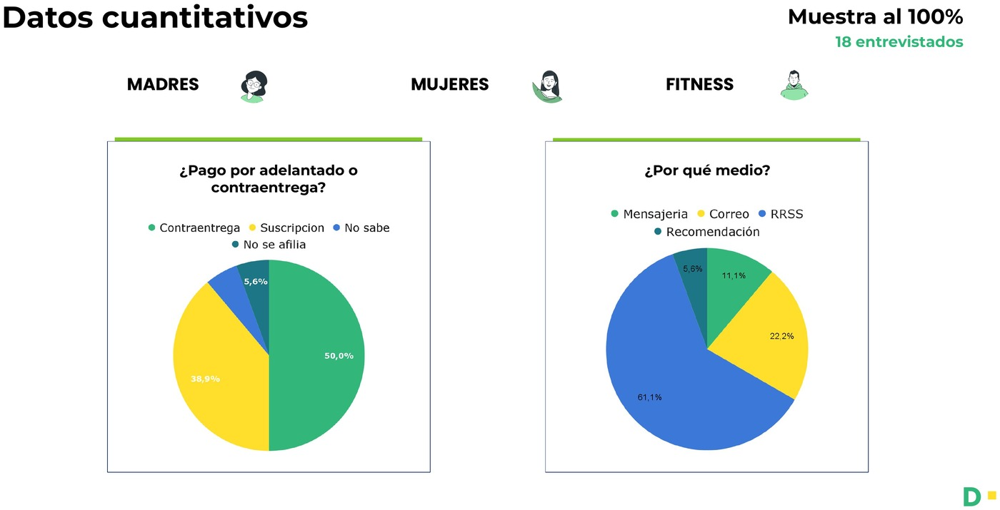

¿Cómo empezó?How did it start?
Farmauna quería evaluar la oportunidad de lanzar planes de suscripción de productos de salud y cuidado personal. El research buscó entender el journey de compra frecuente de tres perfiles de usuario y validar qué tan atractivo y viable era el concepto.
Farmauna wanted to evaluate the opportunity to launch subscription plans for health and personal-care products. The research sought to understand the frequent-purchase journey of three user profiles and validate how attractive and feasible the concept was.
Objetivo principalMain objective
Conocer y entender el journey de un usuario que compra de manera frecuente productos para su cuidado y el de su familia.
Know and understand the journey of a user who frequently buys products for their own and their family's care.
02
¿Qué descubrimos?What did we discover?
18
entrevistas a
profundidad
in-depth
interviews
3
perfiles de
usuario
user
profiles
75%
se suscribiría
(perfil madres)
would subscribe
(mothers profile)
Datos cuantitativosQuantitative data
Cruzamos los datos cuantitativos por perfil — frecuencia y responsable de compra, disposición a suscribirse, ponderaciones y medios de pago.
We cross-analyzed the quantitative data by profile — purchase frequency and decision-maker, willingness to subscribe, priorities, and payment methods.

Hallazgos por perfilFindings by profile
🏋️
Fitness
Nicho especializado que no encuentra sus productos en farmacias grandes. Investigan mucho, comparan precios, valoran packs, ofertas y la composición detallada. Prefieren web antes que app y valoran un delivery rápido.
A specialized niche that doesn't find its products in big pharmacies. They research a lot, compare prices, value packs, offers and detailed composition. They prefer web over app and value fast delivery.
💄
Mujeres
Estilo de vida rutinario; compran para cuidarse. Comparan productos y precios, valoran el orden y las categorías, y la orientación del farmacéutico (que no siempre tienen). Si el producto es de calidad, lo compran sin importar el precio.
Routine lifestyle; they buy to take care of themselves. They compare products and prices, value order and categories, and the pharmacist's guidance (not always available). If the product is high quality, they buy it regardless of price.
👶
Madres
Compras frecuentes y planificadas para sus hijos. Son las más dispuestas a suscribirse: la recurrencia y la conveniencia del delivery les ahorra tiempo y olvidos.
Frequent, planned purchases for their kids. They are the most willing to subscribe: recurrence and delivery convenience save them time and forgetfulness.
04
ConclusionesConclusions
El concepto de suscripción es atractivo, especialmente para el perfil de madres por la recurrencia y conveniencia. La confianza es la barrera principal: la contra-entrega, la transparencia de precios y la posibilidad de pausar o modificar son condiciones para la adopción. La oportunidad está en combinar conveniencia, precios justos, calidad y educación.
The subscription concept is attractive, especially for the mothers profile due to recurrence and convenience. Trust is the main barrier: cash-on-delivery, price transparency, and the ability to pause or modify are conditions for adoption. The opportunity lies in combining convenience, fair prices, quality and education.
📋 Recomendación de diseño
📋 Design recommendation
Diseñar planes de suscripción flexibles, con contra-entrega, transparencia total de precios, control sobre la compra y una capa educativa sobre salud — empezando por el perfil con mayor disposición: las madres.
Design flexible subscription plans, with cash-on-delivery, full price transparency, purchase control, and an educational health layer — starting with the most willing profile: mothers.